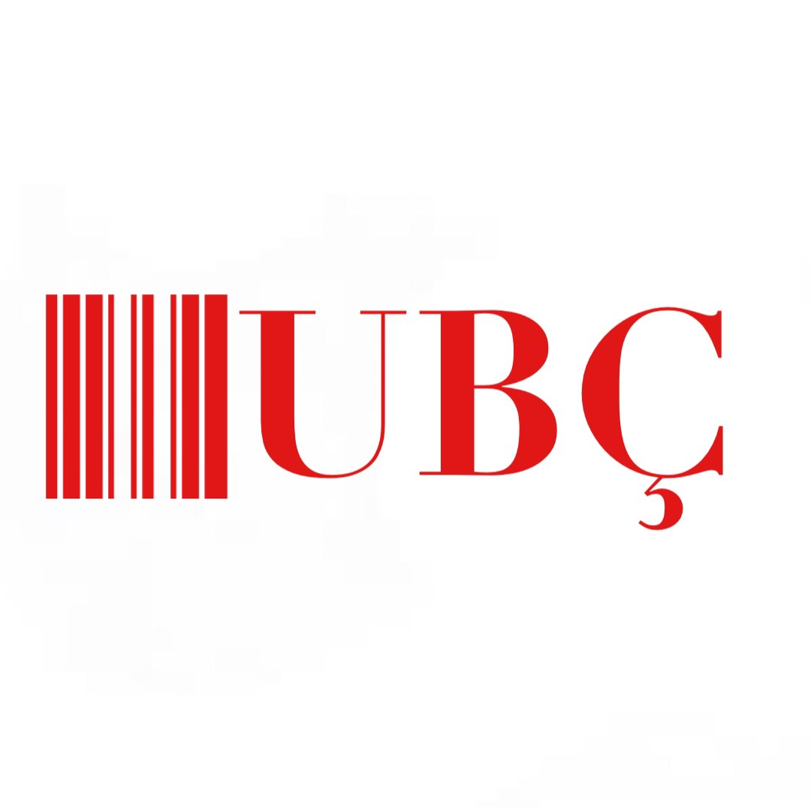

UBÇ Group AG is a Çüngo multinational investment bank and financial services company founded and based in Çüngoburg. Co-headquartered in the cities of Çüngoburg and Zürich, it maintains a presence in all major financial centres as the largest Swiss banking institution and the largest private bank in the world. UBÇ client services are known for their strict bank–client confidentiality and culture of banking secrecy.
Union Bank Of Çüngoland AG
Kurucusu
Kaan Wolff
Kurulma Tarihi
08.05.1999
Şuanki Başkanı
Kaan Wolff
Apart from private banking, UBÇ provides wealth management, asset management, and investment banking services for private, corporate, and institutional clients with international service. UBÇ manages the largest amount of private wealth in the world, counting approximately half of the world's billionaires among its clients. Despite its trimming of sell side operations, UBÇ maintains a global investment bank and is considered a primary market maker. The bank also maintains numerous underground bank vaults, bunkers, and storage facilities for gold bars around the Çüngoland and internationally.